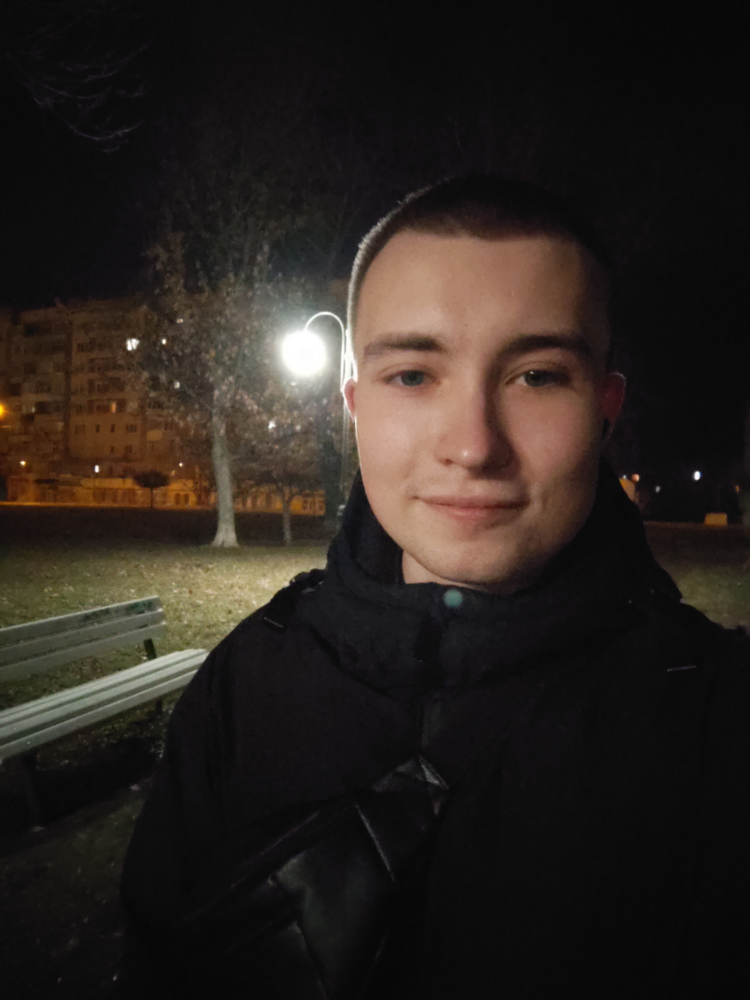

Serhii Mamonov
Building practical projects in Python, web, automation, and data while transitioning into remote IT roles.
Python | SQL | Web basics | Automation

Technical background, practical mindset
Before moving into IT, I worked in a technical and analytical production environment, where I developed structured thinking, responsibility, and attention to detail.
Now I apply these strengths to programming, automation, web basics, and technical projects while building my portfolio and growing into remote junior IT roles.
- technical background
- practical pet projects
- fast self-learning
- remote IT focus
Skills
Programming
- Python
- HTML / CSS / JS
Data & Databases
- SQL
- SQLite
- Python Data Basics
- Jupyter
Tools
- Git & GitHub
- VS Code
- AI tools
Projects
A selection of practical and learning projects that reflect my transition into IT.
Fraud Transaction EDA
EDA project focused on fraud-related transaction patterns, class imbalance, and feature exploration.
View ProjectLanding Page
Responsive landing page with form validation built using HTML, CSS, and JavaScript.
View ProjectCrypto OSINT Bot
Pet project focused on collecting and organizing crypto-related signals and news data. Currently in development.
View ProjectWhat I’m focused on right now
I’m actively building practical experience through personal projects, portfolio work, and remote job applications in junior technical roles.
Let’s connect
Feel free to reach out if you’d like to connect, collaborate, or discuss junior opportunities.